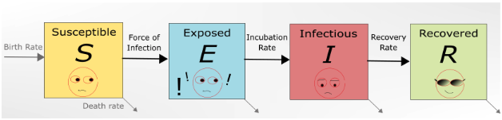
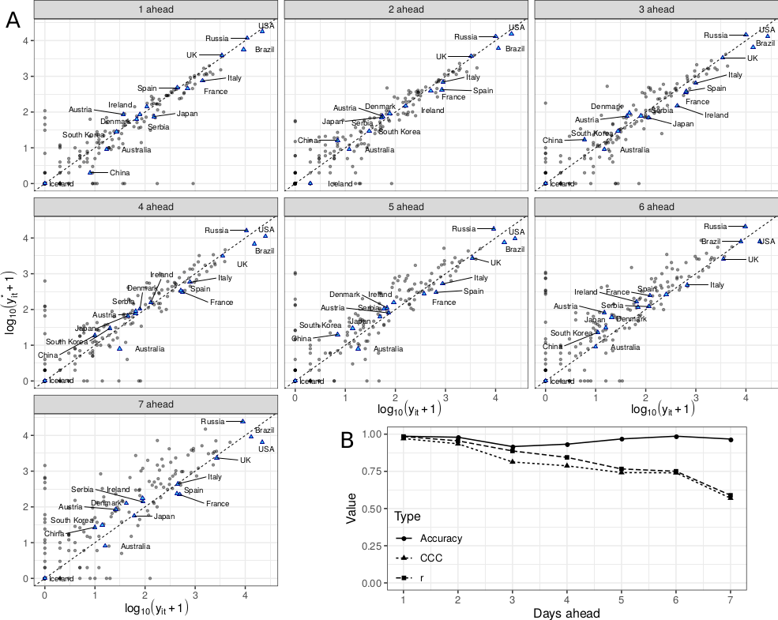
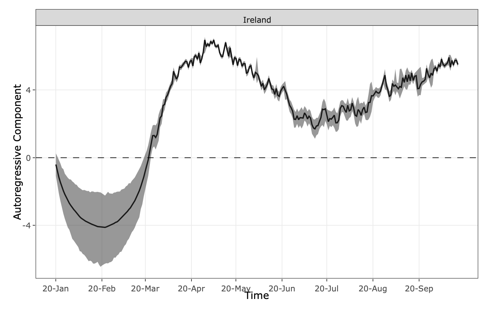
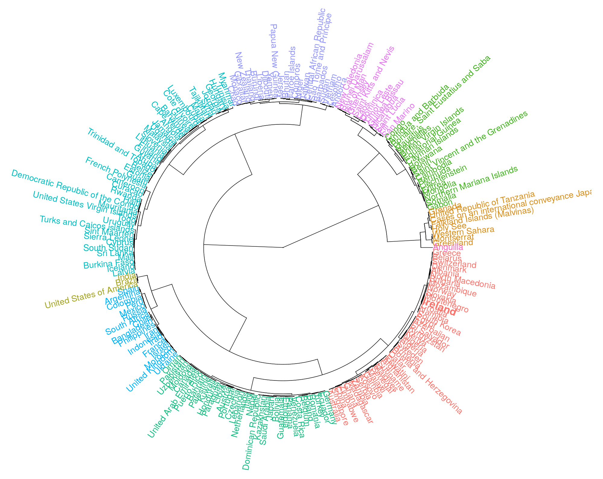

“How many cases do you think we’re going to have today?”, my fiancèe asked me just as I’m writing this post – and quite frankly I’ve asked that myself many times over the last several months. Wouldn’t it be great if we had a method to accurately predict the number of confirmed COVID-19 cases we’ll have every single day for, say, the next month? If we could do that, we’d know whether our measures to contain the virus are working, whether we would be able to lift particular restrictions here and there, invest in intensive care units, or whether that wedding we had planned long ago would finally happen or have to be postponed… again.
It is very hard, however, to pinpoint exactly every single factor that affects the number of reported COVID-19 cases, and most importantly, measure them all. Here we try and outline different techniques we could use to try and predict how the outbreak will behave in the future, and show a particular method we have developed to obtain short-term forecasts with a reasonable degree of accuracy. We have packaged the method into an app, which you can access here.
There are many different strategies and mathematical/statistical tools we can use to attempt to predict the future. These can include what we call mechanistic, or compartment models, for example. These make assumptions based on empirical evidence of the biological system being studied and translate them into mathematical equations based on the flow of individuals to/from specific compartments. For COVID-19 the SEIR-type model has been widely used by many research groups to describe the behaviour of the outbreak (see our blog post on the use of SEIR models to predict when the pandemic will end). They are realistic in the sense that they reflect the epidemiological behaviour of the outbreak.

There are other alternatives that do not take into account the true biological nature of the phenomenon per se, but may use it as input in a different way. Many machine learning techniques could sometimes be seen as black-box methods, that would e.g. take the reported number of past COVID-19 cases and other variables that we would believe could influence this number and spit out a prediction for tomorrow, or next week, next month, etc. There are cases where these methods are even more accurate than mechanistic models, however there is a trade-off to consider here in terms of prediction accuracy vs. explainability, as discussed here. If a new event or variable comes into play, which could empirically be very important to dictate the future behaviour of the pandemic, it is very difficult to gauge its effects using a black-box method.
We could also simply assume that the number of reported COVID-19 cases today is purely a reflection of the reported number of cases yesterday, and the day before, and so on. So we pretty much assume all variables that influence this process can be summarised purely by the outcomes we have observed in the past, and this can in turn be used to forecast what future numbers will be. Of course, there are plenty of different ways to include other variables in these types of models, but the important thing is to notice that we place a very heavy assumption on an underlying process that is able to explain its own behaviour. We usually refer to these models as “time series” or “state-space” models.
There are many factors that influence our ability to predict the number of future COVID-19 cases. Imagine we have, for example, a fantastic SEIR-type model that can reproduce the dynamics of the disease almost perfectly up to today. To be able to predict with great accuracy what will happen tomorrow (or even further down the line), we must assume, among other things, that the assumptions that hold today will still hold tomorrow and so on. If any new variable comes into play, or if the variables that are involved change over time, our predictions can be completely off.
This is not the worst problem, however. There are in fact many variables that we’re simply not able to measure with good precision. This includes knowing, for example, where everybody in the country is at all times, who they talk to, for how long, where they will be, etc. This is why it is important to do contact tracing, although this matters mostly in a retrospective way, not necessarily to predict what will happen in the future.
But wait a minute now, we don’t even know whether the data we can actually measure is in fact accurate! Or to be more specific, we do know that our data is definitely not 100% accurate. Cases reported today could reflect infections that happened between a few days ago to several weeks. Tests are not 100% accurate either, so there is a pool of false positives in there, as well as false negatives not being included in the whole sum. Simply put, the data we have is pretty much a proxy of the real thing. Hence why it is so important to understand what these numbers could actually mean, and not imbue them with improper meaning.
So long-term forecasting is very prone to built-up variation and error, as we all know. It’s just like predicting what time you’ll wake up on your birthday 10 years from now. But there must be something we could do in the short-term, right? Well, it depends on how “long” this short-term is. And it also depends on how we want to use this information.
We developed a modelling framework in an attempt to predict the number of reported COVID-19 cases for up to 7 days in the future. We fitted our models to the data collected by the ECDC to generate the forecasts. See below for a validation study we carried out back in May/2020.

The panels are in the logarithmic scale, but in essence, the closer the points are to the identity line (dashed line), the closer our model was in predicting the number of COVID-19 cases up to 7 days ahead (panels in part A). In part B we see that the accuracy of the method is high for all 7 days ahead, but we begin to lose in terms of precision from day four onwards. (\(r\) represents Pearson’s linear correlation coefficient, the closest it is to 1 the better the method is; the same applies to the CCC - the concordance correlation coefficient.)
The idea behind this is not to be able to inform governments the exact numbers we’d expect tomorrow, but to give more perspective in terms of the types of trends we expect in the near future. This is useful to inform decision making related to the healthcare services. For instance, if a particular country’s healthcare system is currently at capacity, and we are predicting an upward trend in the number of infections, then this could guide policy in terms of resource allocation to accommodate the extra patients that are likely to seek health professionals in the upcoming weeks. This is why it is so important to look at overall trends (for example, the number of cases per 100,000 people over the last 14 days).
Our model creates predictions based on two components. The first, called the autoregressive component, uses information on the past number of cases to predict future ones. The second is included to account for extra variability that could occur for a variety of different reasons. The autoregressive component is directly linked to the behaviour of the outbreak, so it is useful to detect waves of the pandemic. See, for example, our latest estimates for Ireland:

We can clearly see that towards the end of July this second wave was already starting to take shape, and now we are aiming at a new peak of cases.
Now that we have profiles for each country on how the pandemic is behaving in terms of number of cases, perhaps it would be a good idea to look at which countries present a similar behaviour over the last, say, 60 days. We created a dendrogram based on a cluster analysis performed using the values of the autoregressive parameter and produced the figure below –

Here we see that over looking at the past two months, the country that has presented the most similar behaviour to Ireland was Croatia. In our app you can play with different ways of presenting the dendrogram, as well as print names of different countries in bold to aid in finding them easily when looking at the picture. You can also change the number of clusters.
Perhaps these comparisons would be useful in terms of comparing government policies on how to deal with the COVID-19 outbreak, and learn lessons from successful policies vs unsuccessful ones. Also, this type of modelling can help to detect a further wave of the outbreak sooner rather than when we are already in the middle of it!
In the end of the day, there is no true, correct model we can apply. After all, it is impossible to know exactly what the data generating mechanism is. We can only attempt to understand it and reproduce its behaviour using mathematical/statistical tools. We hope, however, that our modelling approach can be useful. We could point a whole list of problems with it here, such as completely ignoring biological mechanisms and using just past behaviour to explain future behaviour without any additional context. But we believe it represents a reasonable attempt at forecasting the number of COVID-19 cases in the short-term.
Did you find this page helpful? Consider sharing it üôå
Moral, et al. (2020, Sept. 29). Ireland’s COVID-19 Data Dive: How hard is it to predict COVID-19 cases?. Retrieved from https://www.hamilton.ie/covid19/posts/2020-10-01-how-hard-to-predict-cases/
@misc{moral2020how,
author = {Moral, Rafael and Oliveira, Thiago and Parnell, Andrew},
title = {Ireland's COVID-19 Data Dive: How hard is it to predict COVID-19 cases?},
url = {https://www.hamilton.ie/covid19/posts/2020-10-01-how-hard-to-predict-cases/},
year = {2020}
}